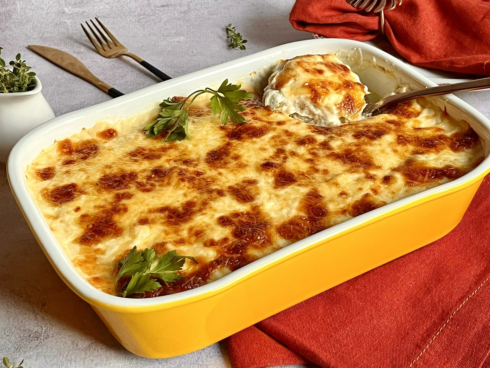

Bacalhau

 40m
40m
INGREDIENTES
- 1 kg de bacalhau
- 1/2 kg de cenoura
- 2 tomates (vermelho e/ou amarelo)
- 1 colher (sopa) de extrato de tomate
- 1/2 kg de batata
- 2 cebolas grandes
- 1 pimentão
- Leite de coco
- Sal
- Azeite de oliva a gosto
- Alho a gosto
- Azeitonas
MODO DE PREPARO
- Dessalgue o bacalhau por 12 horas, em geladeira, trocando a água.
- Corte em lascas o bacalhau, retire a pele.
- Em uma assadeira coloque azeite de oliva no fundo, faça uma cama com cebola em rodelas, coloque por cima batatas cozidas em rodelas.
- Coloque por cima o bacalhau em lascas.
- Coloque outra camada de cebola, um pouco de alho em lascas, adicione pimentão cortado em palitos.
- Coloque cenoura picadinha, algumas azeitonas (pode ser sem caroço), o tomate sem sementes e cheiro verde picado.
- Acrescente o molho branco por cima, um pouco mais de cheiro verde, 1 colherada de extrato de tomate e regue leite de coco.
- Finalize com um pouco de azeite de oliva.
- Leve ao forno por 30 minutos à 180°C para gratinar.
- Sirva com arroz branco.